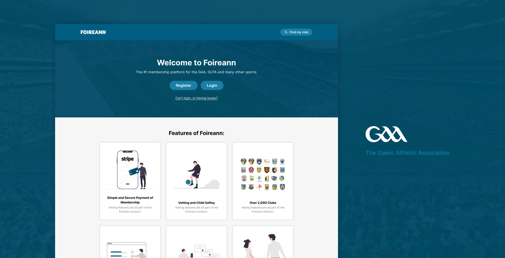
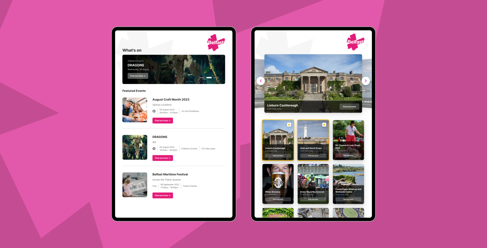
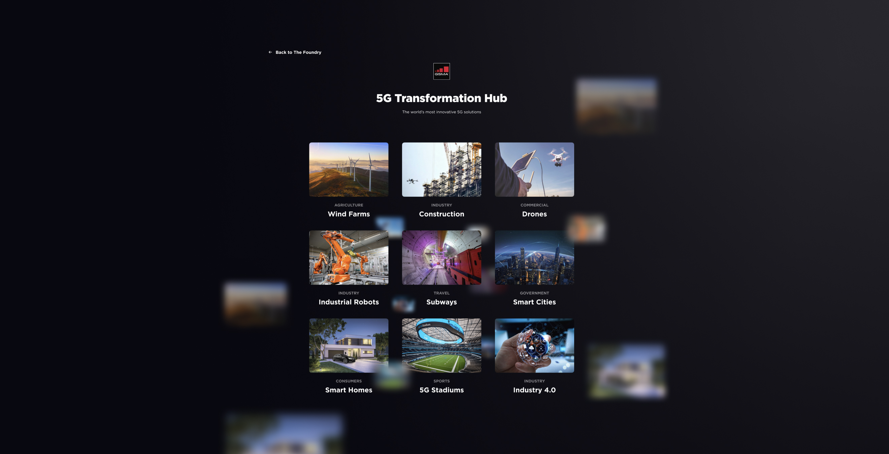
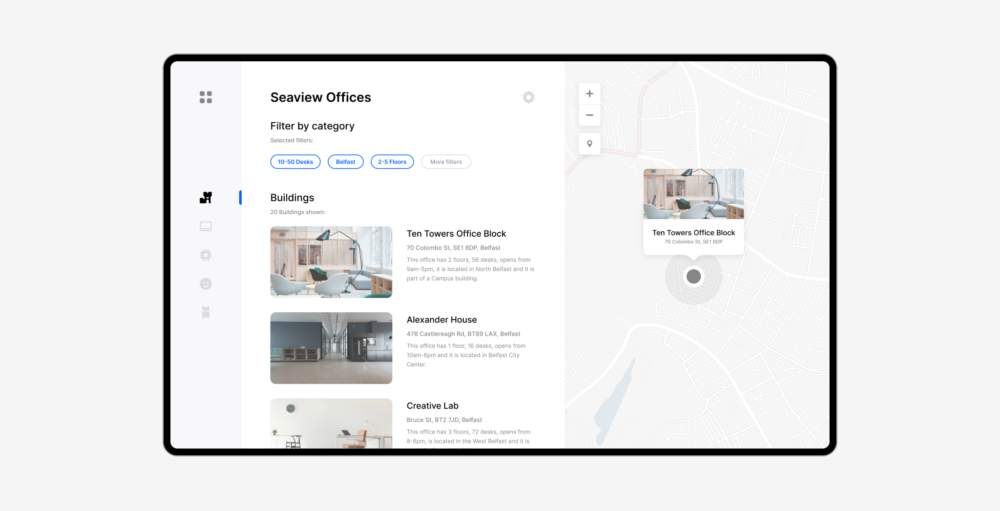
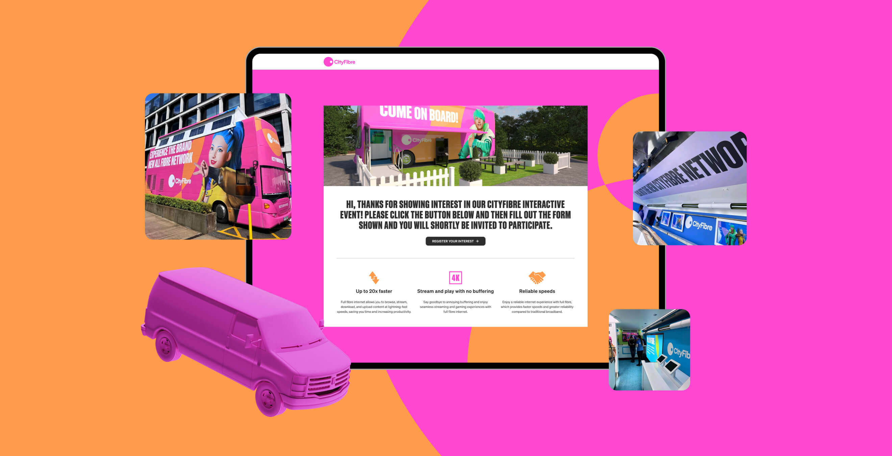
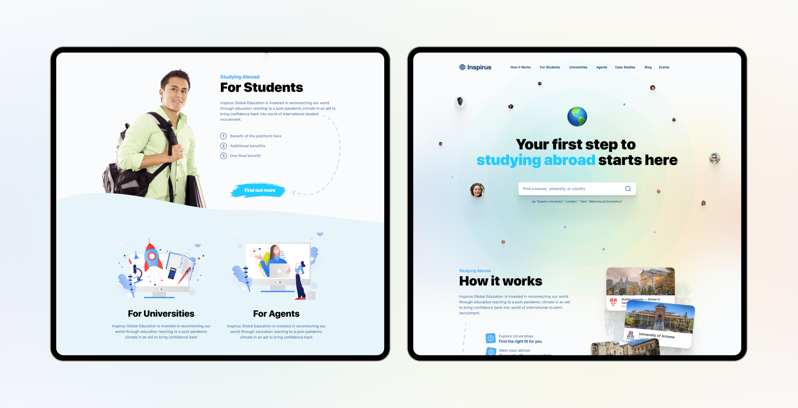

The GSMA Foundary was projected onto a giant screen at Mobile World Congress Barcelona
2022, it allowed users to scan different QR codes which would take them to different mini-sites which
would have case studies on them. The ring of fire in the background represented a portal for which users
could walkthrough and be transported to a future place.

The foireann landing page for the GAA, a gateway and marketing website for the GAA's official membership platform.

A selection of three different screens from a project where I worked with VisitBelfast to
design a large touchscreen interface which allowed users to interact and find events in the city of
Belfast.

The GSMA 5G Hub, this particular design, much like the GSMA foundary was also projected onto a
giant screen, but instead focused more on the benefits of 5G and mobile connectivity.

A project whereby I created a fictional interface to help solve the back-to-office problem
businesses were facing post pandemic.

As part of my time working on CityFibre, I was tasked to design a tablet interface for one of
CityFibre's connectivity campaign buses, users would go onto the bus and be guided through a purpose
built tour of Fibre broadband and then have the ability to sign up using my interface.

A privately owned project named Inspirus which was designed and aimed to become a
one-stop-shop for students looking to apply to Universities around the world.